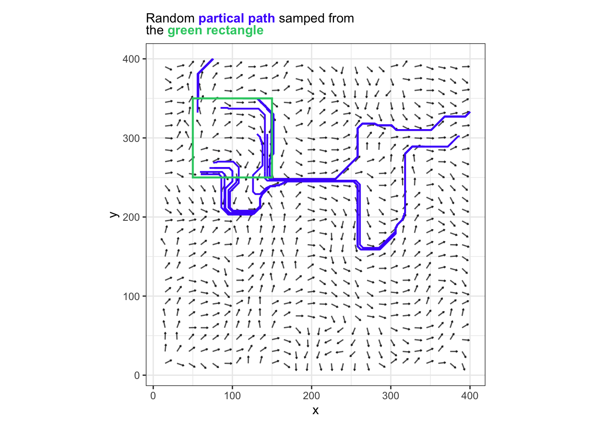

flat_matrix |>
mutate(v=round(value, 2)) |>
ggplot(aes(x,y)) +
geom_tile(aes(fill=v)) +
scale_fill_viridis_b(option = "G") +
coord_equal()Perlin Noise Flow Field
Art
Math
Statistic Characters of Perlin Noise
vs = sort(flat_matrix$value)
m = mean(vs)
sd = sd(vs)
rd = rnorm(length(vs), m,sd)
tibble(
rank = 1:length(vs),
perline_noise = vs,
normal = rd |> sort()
) |>
ggplot() +
geom_density(aes(x = perline_noise),color="blue",linewidth=1) +
geom_density(aes(x = normal),linetype="dashed") +
ggtitle(
glue::glue("<span style='color: blue'><b>Perline Noise</b></span> compares to <br>"
,"a <b>Normal Distribution</b>")
) +
theme(
title = ggtext::element_markdown()
)Vector Field
rec = c(xmin = 50, xmax = 100, ymin = 50, ymax = 100)
flat_matrix |>
mutate(v=round(value, 2)) |>
ggplot(aes(x,y)) +
geom_tile(aes(fill=v)) +
scale_fill_viridis_b(option = "G") +
coord_equal() +
annotate("rect", xmin=50,xmax=100,ymin=50,ymax=100,fill=NA,color="green")Experiment with a small square of data
## select a small sample
flat_matrix |>
filter(x |> between(rec["xmin"], rec["xmax"]) & y |> between(rec["ymin"], rec["ymax"])) |>
mutate(v=round(value, 2)) |>
ggplot(aes(x,y)) +
geom_tile(aes(fill=v)) +
scale_fill_viridis_b(option = "G") +
coord_equal()res=5
init_angle = 0.01 * 2 * pi #10% of a circle which is 36°
flat_matrix |>
## sample a few point
filter(x |> between(rec["xmin"], rec["xmax"]) & y |> between(rec["ymin"], rec["ymax"])) |>
filter(x %%res ==0 & y %% res == 0) |>
## make a vector points
mutate(
stv = diff(c(min(value),value)) / diff(range(value)),
angle = stv * 2 * pi,
d = res * 0.66,
x_p = sin(angle + init_angle) * d + x,
y_p = cos(angle + init_angle) * d + y
) |>
mutate(v=round(value, 2)) |>
ggplot(aes(x,y)) +
geom_segment(aes(x=x,xend=x_p,y=y,yend=y_p),arrow=arrow(length = unit(0.1,"inches")),alpha=0.7) +
geom_point(aes(color=v),alpha=0.33) +
geom_point(aes(x=x_p, y_p,color=v),alpha=1) +
scale_color_viridis_b(option = "G") +
coord_equal()Create a few usefully function in this code chunk
make_rect = function(x=200, y=200, d = 400) {
return( c(xmin = x - d/2, xmax = x + d/2, ymin = y - d/2, ymax = y + d/2))
}
annotate_rect = function(rec,...) {
return(list(annotate("rect"
, xmin=rec['xmin']
, xmax=rec['xmax']
, ymin=rec['ymin']
, ymax=rec['ymax']
, fill = NA
, ...)))
}
crop = function(data, rec = make_rect()) {
data |>
## sample a few point
filter(x |> between(rec["xmin"], rec["xmax"]) & y |> between(rec["ymin"], rec["ymax"]))
}
de_res = function(data, res = 15) {
data |>
filter(x %%res ==0 & y %% res == 0)
}
val_to_angle = function(data,value,init_angle = 0.01 * 2 * pi) {
data |>
mutate(
angle = {{value}} * 2 * pi + init_angle,
)
}res = 15
angle_matrix = flat_matrix |>
## sample a few point
val_to_angle(value)
g_grid = angle_matrix |>
de_res(res=res) |>
crop() |>
## make a vector points
mutate(
d = res * 0.6,
x_p = cos(angle ) * d + x,
y_p = sin(angle ) * d + y
) |>
mutate(v=round(value, 2)) |>
ggplot(aes(x,y)) +
geom_segment(aes(x=x,xend=x_p,y=y,yend=y_p),arrow=arrow(length = unit(0.02,"inches")),alpha=0.7) +
scale_color_viridis_b(option = "G") +
coord_equal()
g_gridNice! Next try release particle to the data grid:
- the particles needs to layout on a grid
- the angle send particle to the next closest grid
- but if were were unlucky the particle will git the center of a grid
This is very simple in this grid system because we simply just round to neast point?
Code
sample_rec = make_rect(100,300,100)
t_angle_matrix = angle_matrix |>
# de_res(res=res) |>
crop()
## Set a Group Parameter
seed_particle = t_angle_matrix |>
crop(sample_rec) |>
slice_sample(n=16) |>
mutate(.group = row_number(), id=0)
particles_path = seed_particle
particle = seed_particle
### A Simple Find My Particle graph
for (i in 1:500) {
next_coord = particle |>
mutate(
x = x + round(cos(angle))
, y = round(y + sin(angle))
, id = i
) |>
select(id,x,y,.group)
particle = t_angle_matrix |>
inner_join(next_coord,c("x","y"))
if(nrow(particle) == 0) {
break
}
particles_path = particles_path |> bind_rows(particle)
}
# particle_smooth = smooth.spline(particles_path)
g_grid +
geom_path(
data = particles_path |>
mutate(xx=x,yy=y),
# mutate(xx=particle_smooth$x, tt=particle_smooth$y),
aes(x = xx, y = yy,group=.group),color="#4c16fb",size=0.7,
# stat="smooth"
) +
# facet_wrap(~.group) +
annotate_rect(sample_rec,color="#2ecc71",alpha=0.5,linewidth=0.8) +
ggtitle(
"",
subtitle=glue::glue(
"Random <span style='color:#4c16fb'><b>partical path</b></span> samped from <br>the ",
"<span style ='color:#2ecc71' ><b>green rectangle</b></span>"
)
) +
theme(
title=ggtext::element_markdown()
)Warning: Using `size` aesthetic for lines was deprecated in ggplot2 3.4.0.
ℹ Please use `linewidth` instead.
Something poetic about this system. Imagine the dotes are people, vectors are social tendencies, influence of our parent’s, influence of the school teacher.
we are all born on this green square but different people scattered up to different places yet fate draw them to one place.
[tbc]